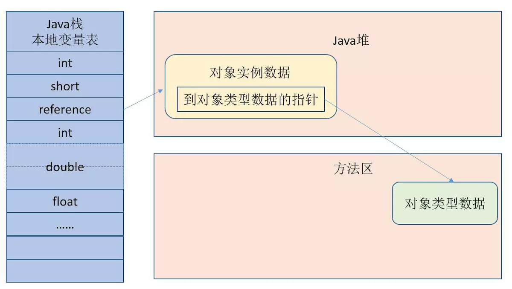

原文连接:https://www.cnblogs.com/wuyuegb2312/p/11839171.html
Java内存模型
：Java垃圾回收相关基础知识0.png)
(图源: 深入理解JVM-内存模型（jmm）和GC)
| 区域名 | 英文名 | 访问权限 | 作用 | 备注 |
|---|---|---|---|---|
| 程序计数器 | Program Counter Register | 线程隔离 | 标记待取的下一条执行的指令 | 执行Native方法时为空; JVM规范中唯一不会发生OutOfMemoryError的区域 |
| 虚拟机栈 | VM Stack | 线程隔离 | 每个Java方法执行时创建，用于存储局部变量表，操作栈，动态链接，方法出口等信息 | 方法执行的内存模型 |
| 本地方法栈 | Native Method Stack | 线程隔离 | Native方法执行时使用 | JVM规范没有强制规定，如Hotspot将VM和Native两个方法栈合二为一 |
| Java堆 | Java Heap | 线程共享 | 存放对象实例 | 更好的回收内存 vs 更快的分配内存 |
| 方法区 | Method Area | 线程共享 | 存储已被虚拟机加载的类信息、常量、静态变量、即时编译器编译后的代码等数据 | JVM规范不强制要求做垃圾收集 |
| 运行时常量池 | Runtime Constant Pool | 线程共享 | 方法区的一部分 | |
| 直接内存 | Direct Memory | - | 堆外内存，通过堆的DirectByteBuffer访问 | 不是运行时数据区的一部分，但也可能OutOfMemoryError |
对象的创建——new的时候发生了什么
讨论仅限于普通Java对象，不包括数组和Class对象。
- 常量池查找类的常量引用，如果没有先做类加载
- 分配内存，视堆内存是否是规整（由垃圾回收器是否具有压缩功能而定）而使用“指针碰撞”或“空闲列表”模式
- 内存空间初始化为零值，可能提前在线程创建时分配TLAB时做初始化
- 设置必要信息，如对象是哪个类的示例、元信息、GC分代年龄等
- 调用
<init>方法
垃圾回收器总结
垃圾回收，针对的都是堆。
分代
- 新生代：适合使用复制算法, 以下三个区一般占比为8:1:1
- Eden 新对象诞生区
- From Survivor 上一次GC的幸存者(见“GC种类-minor GC”)
- To Survivor 本次待存放幸存者的区域
- 老年代：存活时间较久的，大小较大的对象，因此使用标记-整理或标记-清除算法比较合适
- 永久代：存放类信息和元数据等不太可能回收的信息。Java8中被元空间(Metaspace)代替，不再使用堆，而是物理内存。
分代的原因
- 不同代的对象生命周期不同，可以针对性地使用不同的垃圾回收算法
- 不同代可以分开进行回收
回收算法
| 名称 | 工作原理 | 优点 | 缺点 |
|---|---|---|---|
| 标记-清除 | 对可回收对对象做一轮标记，标记完成后统一回收被标记的对象 | 易于理解，内存利用率高 | 效率问题;内存碎片;分配大对象但无空间时提前GC |
| 复制 | 内存均分两块，只使用其中一块。回收时将这一块存活对象全部复制到另一块 | 效率高 | 可用空间减少; 空间不够时需老年代分配担保 |
| 标记-整理 | 对可回收对对象做一轮标记，标记完成后将存活对象统一左移，清理掉边界外内存 | 内存利用率高 | 效率问题 |
标记-X算法适用于老年代，复制算法适用于新生代。
GC种类
- Minor GC，只回收新生代，将Eden和From Survivor区的存活对象复制到To Survivor
- Major GC，清理老年代。但因为伴随着新生代的对象生命周期升级到老年代，一般也可认为伴随着FullGC。
- FullGC，整个堆的回收
- Mixed GC，G1特有，可能会发生多次回收，可以参考关于G1 GC中Mixed GC的分析
垃圾回收器小结
| 垃圾回收器名称 | 特性 | 目前工作分代 | 回收算法 | 可否与Serial配合 | 可否与ParNew配合 | 可否与ParallelScavenge配合 | 可否与SerialOld配合 | 可否与ParallelOld配合 | 可否与CMS配合 | 可否与G1配合 |
|---|---|---|---|---|---|---|---|---|---|---|
| Serial | 单线程 | 新生代 | 复制 | - | - | - | Y | N | Y | N/A |
| ParNew | 多线程 | 新生代 | 复制 | - | - | - | N | N | Y | N/A |
| ParallelScavenge | 多线程, 更关注吞吐量可调节 | 新生代 | 复制 | - | - | - | N | N | Y | N/A |
| SerialOld | 单线程 | 老年代 | 标记-整理 | - | - | - | Y | Y | N | N/A |
| ParallelOld | 多线程 | 老年代 | 标记-整理 | N | N | Y | - | - | - | N/A |
| CMS | 多线程，并发收集，低停顿。但无法处理浮动垃圾，标记-清除会产生内存碎片较多 | 老年代 | 标记-清除 | Y | Y | N | Y | - | - | N/A |
| G1 | 并行并发收集，追求可预测但回收时间，整体内存模型有所变化 | 新生代/老年代 | 整体是标记-整理，局部(两Region)复制 | N | N | N | N | N | N | - |
在本系列的上一篇文章关于GC(上)：Apache的POI组件导致线上频繁FullGC问题排查及处理全过程中，减少FullGC的方式是使用G1代替CMS，计划在下一篇文章中对比CMS和G1的区别。
理解GC日志
只举比较简单的例子，具体各项的格式视情况分析，不同回收器也会有差异。
2019-11-22T10:28:32.177+0800: 60188.392: [GC (Allocation Failure) 2019-11-22T10:28:32.178+0800: 60188.392: [ParNew: 1750382K->2520K(1922432K), 0.0312604 secs] 1945718K->198045K(4019584K), 0.0315892 secs] [Times: user=0.09 sys=0.01, real=0.03 secs]开始时间-(方括号[)-发生区域(ParNew，命名和GC回收器有关)-回收前大小-回收后大小-(方括号])-GC前堆已使用容量-GC后堆已使用容量大小-回收时间-使用时间详情(用户态时间-内核时间-墙上时钟时间)
注意这里没有包括“2019-11-22T10:28:32.177+0800: 60188.392: [GC (Allocation Failure)”这部分的分析。
可借鉴的编程模式
对象分配的并发控制
对象创建是很频繁的，在线程共享的堆中会遇到并发的问题。两种解决办法：
- 同步锁定：CAS+失败重试，确保原子性
- 堆中预先给每个线程划分一小块内存区域——本地线程分配缓冲(TLAB)，TLAB使用完并分配新的TLAB时才做同步锁定。可看作1的优化。
CAS: Conmpare And Swap，用于实现多线程同步的原子指令。 将内存位置的内容与给定值进行比较，只有在相同的情况下，将该内存位置的内容修改为新的给定值。关于CAS可以参考：
Java中的CAS实现原理
CAS系列（3）：CAS无锁自旋和同步锁线程切换使用场景对比
对象访问的定位方式
前提条件：通过栈上本地变量表的reference访问堆中的对象及它在方法区的对象类型数据(类信息)
主流的两种方式，这两种方式各有优点，可以看出方式2是方式1的优化，但并不是全面超越方式1，无法完全取代。
这里可以看到要权衡垃圾回收和访问速度两方面。
方式1: 直接指针访问实例数据

图源:深入理解JVM-内存模型（jmm）和GC
reference直接存放对象实例地址，只需要一次访问即可，执行效率较高。
方式2: 使用句柄池
：Java垃圾回收相关基础知识2.png)
图源:深入理解JVM-内存模型（jmm）和GC
reference中地址稳定，对象被移动时只需要改句柄池的地址。相对的，访问实例需要两次指针定位。
参考资料
- 周志明.著《深入理解JAVA虚拟机》
- 深入理解JVM-内存模型（jmm）和GC
- jvm的新生代、老年代、永久代关系
- JVM垃圾回收——新生代，老年代，永久代，Minor GC，Full GC